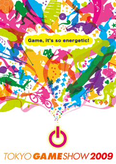

June 3, 2009
Press Release
TOKYO GAME SHOW 2009
Unveiling the Main Visual
Expressing the Energetic Game World
Computer Entertainment Supplier’s Association
Nikkei Business Publications, Inc.
The Computer Entertainment Supplier’s Association (CESA; Chairman: Yoichi Wada; Location: Minato-ku, Tokyo), in cooperation with Nikkei Business Publications, Inc. (Nikkei BP; President & CEO: Yasuo Hirata; Location: Minato-ku, Tokyo), will hold the TOKYO GAME SHOW 2009 over a four-day period from Thursday, September 24 to Sunday, September 27, 2009 at Makuhari Messe in Mihama-ku, Chiba City, Chiba Prefecture. The main visual for the Show was unveiled today.
Games to cheer up and re-energize the world!
The main visual of the TOKYO GAME SHOW 2009 expresses the concept of “Game, It’s so energetic!” using different shapes and motifs all shooting out from a game start button.
These colorful silhouettes dynamically symbolize the various elements and components that make up games, sending out the message that switching a game on unleashes fun, enjoyment, and excitement to the world.
As expressed in the visual, TOKYO GAME SHOW 2009 hopes to cheer up the world through games by introducing the latest information and state-of-art technologies in the computer entertainment industry.
At the same time, TOKYO GAME SHOW 2009 aims to provide as many people as possible with the opportunity to experience the “power of games”, and to share their energy and spirit so that we can build a bright future together.
[TGS INFORMATION 2]
TOKYO GAME SHOW 2009 exhibitor applications will be received until June 12 (Friday).
TOKYO GAME SHOW Management Office will continue to put out information on “TOKYO GAME SHOW 2009”. Upcoming events on the schedule are the deadline for exhibitor applications on June 12 (Fri.) and the explanatory meeting for all exhibitors on July 1 (Wed.). Information on other programs and sub-events will be announced as necessary, and details of the event, including exhibitor information and other plans and projects, will be updated regularly.
The last year in 2008 featured an impressive total of 1,768 booths supported by 209 exhibitors. Highlighting the latest information on the game industry, the TOKYO GAME SHOW will continue its aim of promoting developments that will further expand the market.
†Those who wish to apply for exhibition can find more details on the TOKYO GAME SHOW official website: https://expo.nikkeibp.co.jp/tgs/2009/en/exhibition/
†For details, please contact the TOKYO GAME SHOW Overseas Management Office.
Outline
| Event Title | TOKYO GAME SHOW 2009 | ||||||||||||
|---|---|---|---|---|---|---|---|---|---|---|---|---|---|
| Organized by | Computer Entertainment Supplier’s Association (CESA) | ||||||||||||
| Co-organized by | Nikkei Business Publications, Inc. (Nikkei BP) | ||||||||||||
| Supported by | Ministry of Economy, Trade and Industry | ||||||||||||
| Period |
| ||||||||||||
| Venue | Makuhari Messe (Mihama-ku, Chiba City, Chiba Prefecture) | ||||||||||||
| Exhibits | General Area Advanced Mobile & PC Area (new)† Sales Area Kids’ Area Business Solutions Area Game School Area †Dedicated to introducing mobile contents, such as games for mobile phones and smartphones, online PC games, gaming PCs, peripheral equipment, and so on. |
[Exhibitor Registration Schedule]
| Application Deadline | June 12 (Friday) |
|---|---|
| Booth Allocation Meeting | June 24 (Wednesday)—for exhibitors who apply for 40 booth partition units or more (island booths) July 1 (Wednesday)—for exhibitors who apply for 39 booth partition units or less (with adjoining booths) |
| Explanatory Meeting | July 1 (Wednesday) |